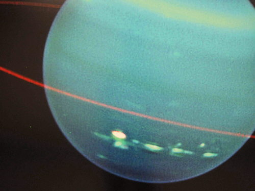

Es el septimo planeta desde el Sol y el tercero más grande del Sistema Solar. Urano es también el primero que se descubrió gracias al telescopio, en 1781.
La atmósfera de Urano está formada por hidrógeno, metano y otros hidrocarburos. El metano absorbe la luz roja, por eso refleja los tonos azules y verdes.
Urano está inclinado de manera que el ecuador hace casi ángulo recto, 98 º, con la trayectoria de la órbita. Esto hace que en algunos momentos la parte más caliente, encarada al Sol, sea uno de los polos.
Su distancia al Sol es el doble que la de Saturno. Está tan lejos que, desde Urano, el Sol parece una estrella más. Aunque, mucho más brillante que las otras.
Urano, descubierto por William Herschel en 1781, es visible sin telescopio. Seguro que alguien lo había visto antes, pero la enorme distancia hace que brille poco y se mueva lentamente. Además, hay más de 5.000 estrellas más brillantes que él.
La inclinación sorprendente de Urano provoca un efecto curioso: su campo magnético se inclina 60 º en relación al eje y la cola tiene forma de tirabuzón, a causa de la rotación del planeta.
En 1977 se descubrieron los 9 primeros anillos de Urano. En 1986, la visita de la nave Voyager permitió medir y fotografiar los anillos, y descubrir dos nuevos.
Los anillos de Urano son distintos de los de Júpiter y Saturno. El exterior, Epsilon está formado por grandes rocas de hielo y tiene color gris. Parece que hay otros anillos, o fragmentos, no muy amplios, de unos 50 metros.
| Radio: | 25.362 km |
| Masa: | 86,81E24 kg (14,54 Masa terrestre) |
| Superficie: | 8.083.079.690 km² |
| Fecha de descubrimiento: | 13 de marzo de 1781 |
| Distancia desde el Sol: | 2.877.000.000 km |
| Lunas: | Miranda, Titania, Umbriel, Oberón, Ariel, Puck, Cupido, Más |